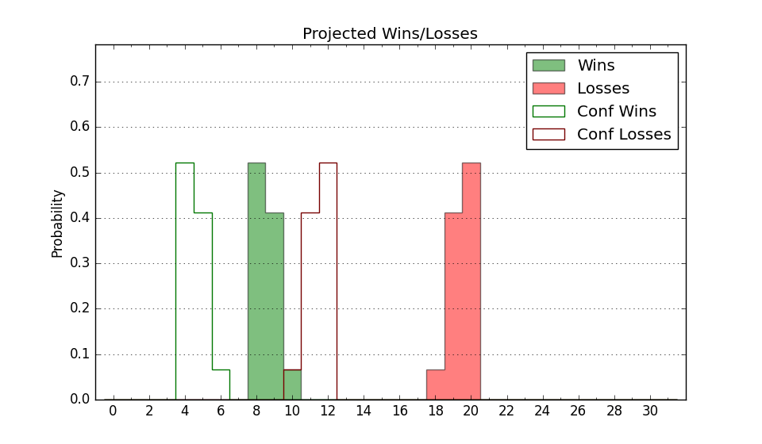

| Home | Game Probabilities | Conferences | Preseason Predictions | Odds Charts | NCAA Tournament |
| City: | Vermillion, South Dakota | |
| Conference: | Summit (9th)
| |
| Record: | 4-10 (Conf) 8-18 (Overall) | |
| Ratings: | Comp.: -15.7 (324th) Net: -15.7 (324th) Off: 100.7 (255th) Def: 116.4 (354th) SoR: 0.0 (143rd) |
| Remaining | ||||||
|---|---|---|---|---|---|---|
| Date | Opponent | Win Prob | Pred. | |||
| 2/29 | North Dakota St. (213) | 37.9% | L 74-77 | |||
| 3/2 | @ North Dakota (228) | 16.7% | L 71-82 | |||
| Previous | Game Score | |||||
| Date | Opponent | Win Prob | Result | Off | Def | Net |
| 11/10 | UT Rio Grande Valley (314) | 61.2% | W 100-79 | 15.3 | 7.2 | 22.5 |
| 11/14 | @DePaul (299) | 28.0% | L 60-72 | -19.7 | 4.7 | -15.0 |
| 11/17 | (N) VMI (351) | 66.5% | W 85-81 | -2.7 | -4.0 | -6.7 |
| 11/18 | (N) Fort Wayne (155) | 16.3% | L 81-93 | 17.7 | -4.4 | 13.4 |
| 11/26 | Air Force (224) | 39.8% | L 57-58 | -29.1 | 23.8 | -5.3 |
| 12/3 | @Western Illinois (255) | 19.0% | W 70-68 | -2.0 | 12.1 | 10.1 |
| 12/9 | Cal St. Bakersfield (268) | 46.3% | W 78-73 | 15.0 | -0.9 | 14.1 |
| 12/16 | @UC Irvine (80) | 3.6% | L 78-121 | 13.5 | -31.0 | -17.5 |
| 12/19 | @Cal St. Bakersfield (268) | 20.2% | L 76-96 | 5.9 | -19.1 | -13.2 |
| 12/21 | @San Diego (256) | 19.1% | L 66-69 | -3.9 | 14.4 | 10.5 |
| 12/29 | @North Dakota St. (213) | 15.2% | W 75-66 | 8.3 | 25.2 | 33.5 |
| 12/31 | Nebraska Omaha (265) | 45.6% | L 51-67 | -33.5 | 7.5 | -26.0 |
| 1/3 | Eastern Washington (135) | 22.4% | L 79-93 | 8.9 | -17.5 | -8.6 |
| 1/6 | @Montana (159) | 9.7% | L 63-82 | -13.8 | 8.8 | -5.0 |
| 1/11 | @Oral Roberts (260) | 19.4% | L 66-84 | -16.7 | 3.4 | -13.4 |
| 1/18 | St. Thomas MN (160) | 26.9% | W 74-73 | 7.8 | 10.3 | 18.1 |
| 1/20 | South Dakota St. (161) | 27.0% | L 55-73 | -25.2 | 9.1 | -16.1 |
| 1/25 | @Denver (241) | 17.5% | L 110-111 | 11.6 | -0.9 | 10.7 |
| 1/27 | @UMKC (245) | 18.0% | L 57-81 | -16.1 | -4.5 | -20.6 |
| 2/1 | North Dakota (228) | 40.6% | L 81-95 | 10.5 | -26.2 | -15.7 |
| 2/4 | @South Dakota St. (161) | 9.8% | L 67-70 | 0.9 | 11.5 | 12.4 |
| 2/8 | Denver (241) | 41.9% | W 92-86 | 2.3 | 4.5 | 6.8 |
| 2/15 | @Nebraska Omaha (265) | 19.7% | L 84-91 | 16.4 | -17.0 | -0.7 |
| 2/17 | @St. Thomas MN (160) | 9.8% | L 80-83 | 23.1 | -9.3 | 13.8 |
| 2/22 | UMKC (245) | 42.7% | L 78-82 | -6.2 | 1.3 | -4.8 |
| 2/24 | Oral Roberts (260) | 45.0% | W 77-76 | 3.5 | -0.8 | 2.8 |
| Stats & Trends | |||||
|---|---|---|---|---|---|
| Current | Day | Week | Month | Season | |
| Composite | -15.7 | -0.0 | -0.4 | -2.0 | -3.5 |
| Comp Rank | 324 | -- | -3 | -14 | -26 |
| Net Efficiency | -15.7 | -0.0 | -0.3 | -1.9 | -- |
| Net Rank | 324 | -- | -3 | -15 | -- |
| Off Efficiency | 100.7 | -0.1 | -0.2 | +1.0 | -- |
| Off Rank | 255 | -3 | -9 | +4 | -- |
| Def Efficiency | 116.4 | +0.0 | -0.1 | -2.9 | -- |
| Def Rank | 354 | -- | -2 | -26 | -- |
| SoS Rank | 298 | -1 | -27 | -13 | -- |
| Exp. Wins | 8.5 | -- | +0.1 | -0.7 | -2.5 |
| Exp. Conf Wins | 4.5 | -- | +0.1 | -0.7 | -1.5 |
| Conf Champ Prob | 0.0 | -- | -- | -0.0 | -2.2 |

| Advanced Stats | ||
|---|---|---|
| Stat | Value | Rank |
| Off Eff FG % | 0.498 | 204 |
| Off Ast Ratio | 0.125 | 286 |
| Off ORB% | 0.261 | 236 |
| Off TO Rate | 0.173 | 338 |
| Off FT Ratio | 0.295 | 272 |
| Def Eff FG % | 0.531 | 279 |
| Def Ast Ratio | 0.156 | 288 |
| Def ORB% | 0.312 | 307 |
| Def TO Rate | 0.098 | 362 |
| Def FT Ratio | 0.282 | 65 |